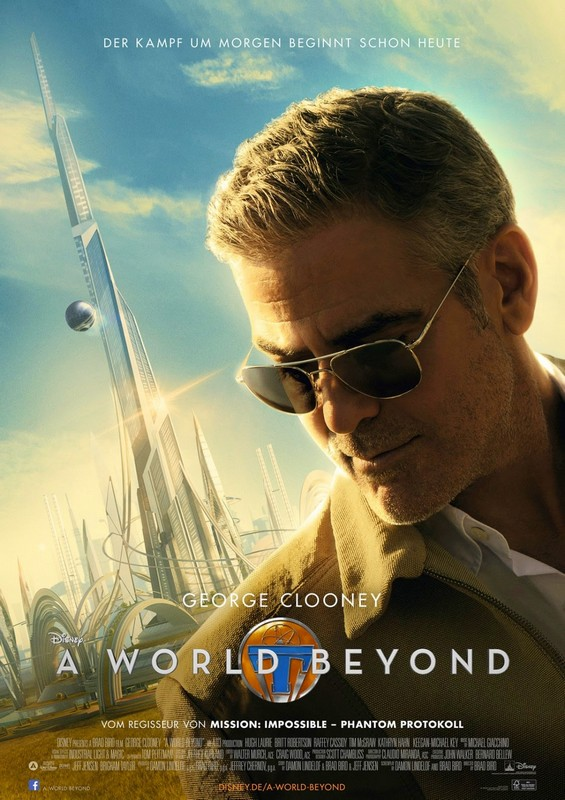

A world beyond (© Walt Disney)
Termin: 21.05.2015
Genre: Sci Fi, Abenteuer
Nationalität: USA
Homepage: http://filme.disney.de/a-world-beyond
Wissenschaft ist das Steckenpferd der jungen, cleveren Casey Newton (Britt Robertson). Eine mysteriöse Anstecknadel, die sie eines Tages findet, lässt sie Visionen von einer anderen Welt bekommen. Sie lernt Frank Walker (George Clooney) kennen, den einstmals genialen Erfinder. Walker ist stark desillusioniert und hat nichts mehr von der Aura, die ihn früher ausmachte. Das kommt daher, dass er eine Art von Parallel-Universum verlassen musste, das Tomorrowland genannt wird. Dort kennt man keinerlei Sorgen, sondern nur Frieden und Glückseligkeit. Deshalb traf es ihn hat, als er gehen musste. David Nix (Hugh Laurie) ist dort nun der Herrscher und die einzigartige und wunderbare Welt des Friedens hat sich in etwas Dunkles und Böses verwandelt. Der Erfinder und das Mädchen wollen nun gemeinsam nach Tomorrowland zurückkehren, und gegen das Böse angehen. Sie wollen Tomorrowland zu dem blühenden Ort zu machen, der es einstmals war.